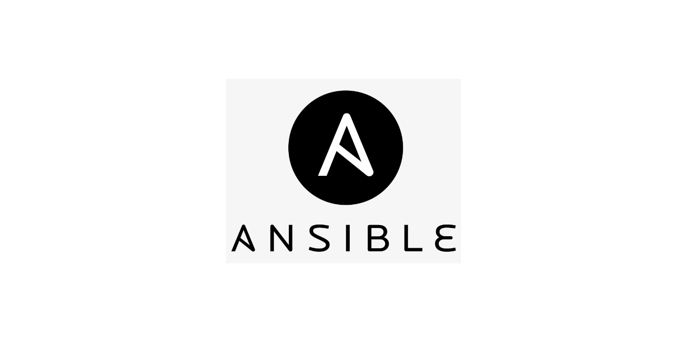
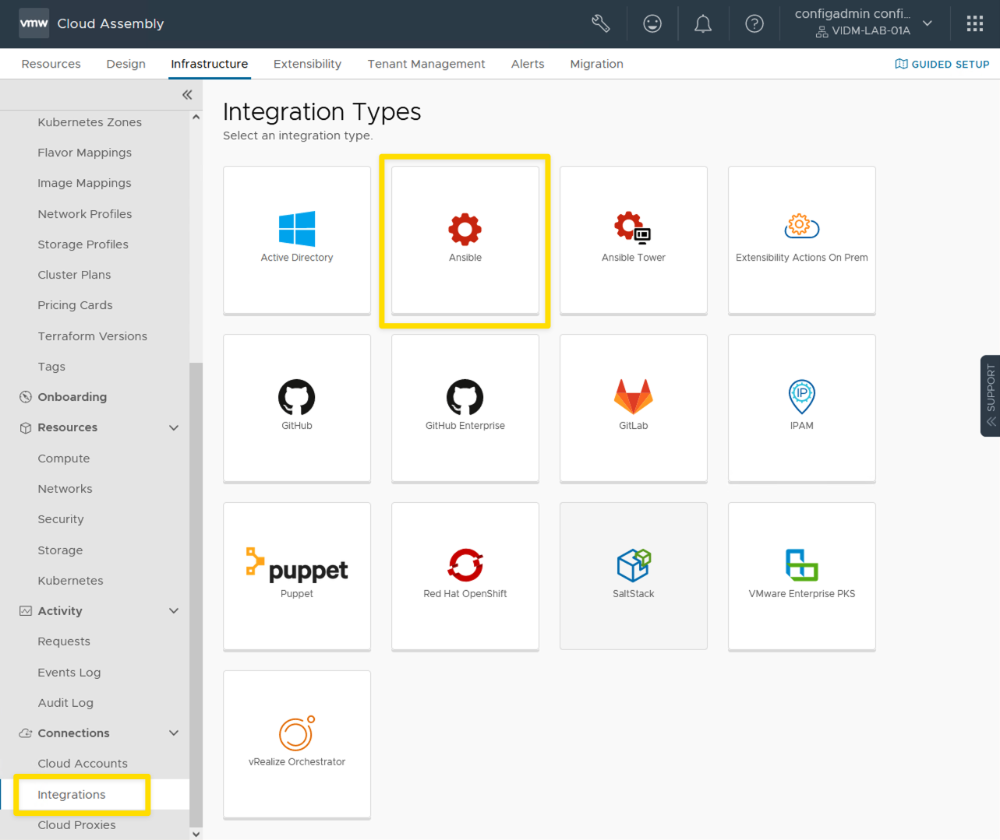
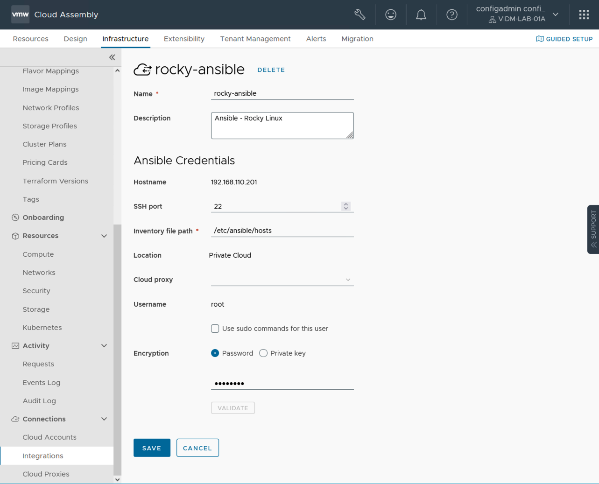
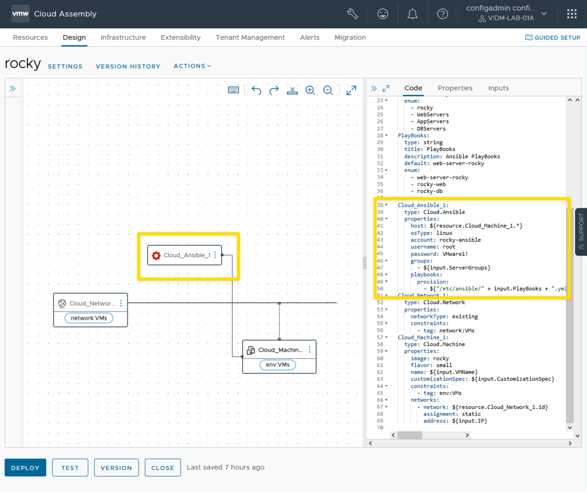
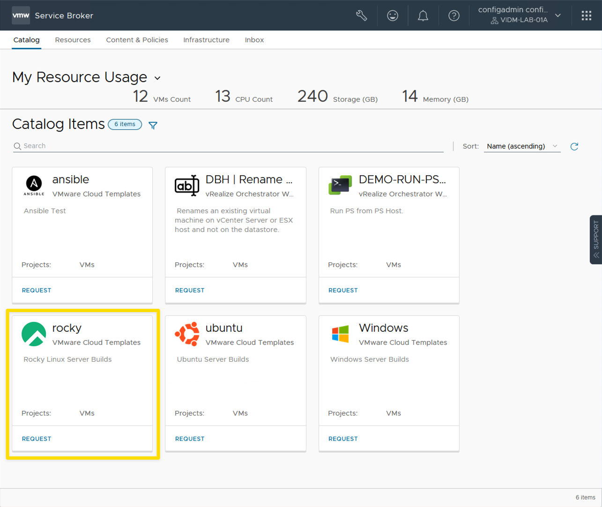
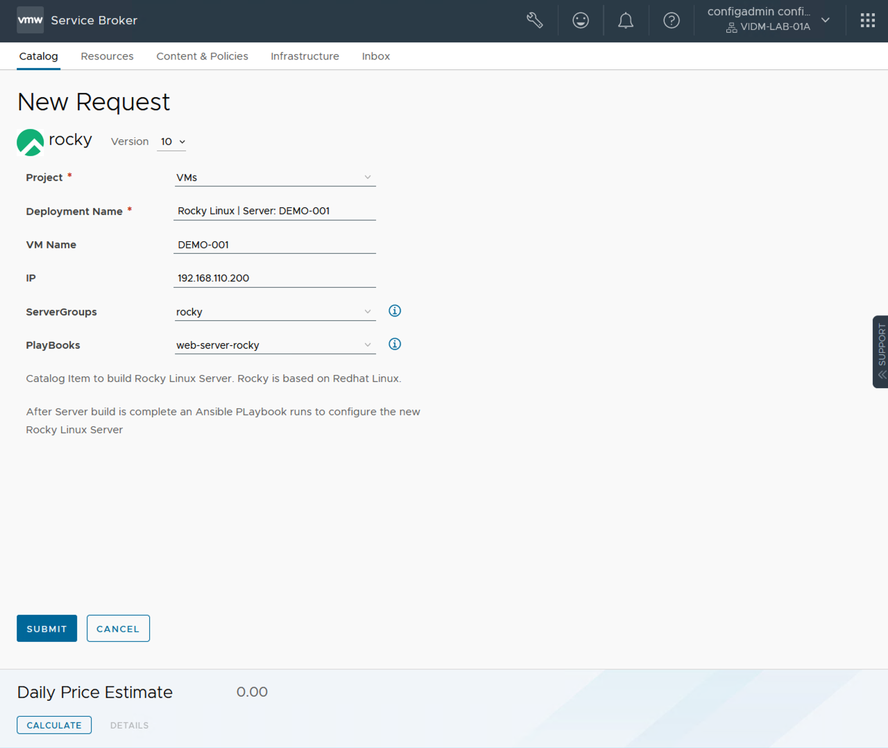

VMware Aria Automation and Ansible Integration

How to setup and configure your VMware Aria Automation environment to work with Ansible.
Use Case
I was recently asked how the VMware Aria Automation | Ansible Integration worked. I never used Ansible before so I thought this would be great time to learn Ansible and demo the integration with VMware Aria Automation. If you look at some of my previous blog posts I wrote about SaltStack Config a lot. I thought this would be a good time for myself to learn Ansible and compare the two products.
When I started reading about the VMware Aria Automation and Ansible Integration, I didn't find a single blog post or article that covered everything from installing Ansible to creating a new Server Build in Aria Automation. I am going to document all the steps that it took for me to do a complete Aria Automation | Ansible integration. I hope that someone will find this blog post useful on their Automation journey.
A lot of people that write about Ansible use it with Red Hat Linux. For my demo environment, I chose to use Rocky Linux so that I don't need to worry about any Red Hat licenses. Some people online recommend using Rocky Linux to replace CentOS. Sometimes it seems that the version of Linux you choose and what product to you use for Automation and Config management can be almost a religious debate. This blog post is to cover a specific use case. How to use VMware Aria Automation | Ansible Integration. Use whatever version of Linux you want. The details that I write about may need to be modified slightly if you use a different version of Linux. This blog post will at least give you the framework to get started.
When I wrote this Blog Post I was using VMware Aria Automation version 8.10.2, Ansible 2.13.3 and Rocky Linux 9.
To use the details in this blog post you will need a working install of VMware Aria Automation.
Create a Ansible Control Server and install Ansible:
- [x] Create a new Server. I created a clean Rocky Linux VM.
- [x] This server will be used as the Ansible Control Node.
Steps to install Ansible:
# Step 1 | Install Rocky Linux EPEL repository
dnf install epel-release -y
# Step 2 | Install Ansible
dnf install ansible -y
# Check Ansible Version after Install
ansible --versionResults from ansible --version:
ansible [core 2.13.3]
config file = /etc/ansible/ansible.cfg
configured module search path = ['/root/.ansible/plugins/modules', '/usr/share/ansible/plugins/modules']
ansible python module location = /usr/lib/python3.9/site-packages/ansible
ansible collection location = /root/.ansible/collections:/usr/share/ansible/collections
executable location = /usr/bin/ansible
python version = 3.9.14 (main, Nov 7 2022, 00:00:00) [GCC 11.3.1 20220421 (Red Hat 11.3.1-2)]
jinja version = 3.1.2
libyaml = True
Edit the hosts file:
- [x] Edit the /etc/ansible/hosts file:
- [x] I like to use nano to edit files. To save file changes in Nano use cntrl-o. To exit Nano use cntrl-x.
# the cmd at the cli to edit the hosts file
nano /etc/ansible/hosts[rocky]
192.168.110.201
[rocky:vars]
ansible_user=root
ansible_password='VMware1!'Edit the ansible.cfg file:
- [x] Edit the /etc/ansible/ansible.cfg file:
# the cmd at the cli to edit the ansible.cfg file
nano /etc/ansible/ansible.cfgThis is the minium contents of the /etc/ansible/ansible.cfg file:
- BOTH of these lines MUST be in the ansible.cfg file to add Ansible to VMware Aria Automation. If they are not present, adding the Integration will fail!
- The vault password file can be named something different, BUT IT MUST BE SPECIFIED!
[defaults]
host_key_checking = False
vault_password_file = /etc/ansible/vault-pass.txtTest Ansible Install
To test the Ansible install you can do a ping:
# the cmd at the cli to run a ping
ansible rocky -m pingVMware Aria Automation Configuration
Add Ansible Integration to VMware Aria Automation:

- You need to specify the Inventory File path. Default is /etc/ansible/hosts
- You need to make sure the /etc/ansible/ansible.cfg file has the following two lines of code to add as an VMware Aria Automation Integration.
ansible.cfg file:
[defaults]
host_key_checking = False
vault_password_file = /etc/ansible/vault-pass.txtAnsible Integration screen:

VMware Aria Automation Cloud Template
Add Ansible to Cloud Template

Cloud Template YAML code
# Cloud Template using Ansible Integration
formatVersion: 1
inputs:
CustomizationSpec:
type: string
description: Customization Specification
default: ubuntu
title: CustomizationSpec
VMName:
type: string
title: VM Name
minLength: 1
maxLength: 12
default: VCROCS-001
IP:
type: string
default: 192.168.110.200
ServerGroups:
type: string
title: ServerGroups
description: Ansible Server Groups
default: rocky
enum:
- rocky
- WebServers
- AppServers
- DBServers
PlayBooks:
type: string
title: PlayBooks
description: Ansible PlayBooks
default: web-server-rocky
enum:
- web-server-rocky
- rocky-web
- rocky-db
resources:
Cloud_Ansible_1:
type: Cloud.Ansible
properties:
host: ${resource.Cloud_Machine_1.*}
osType: linux
account: rocky-ansible
username: root
password: VMware1!
groups:
- ${input.ServerGroups}
playbooks:
provision:
- ${"/etc/ansible/" + input.PlayBooks + ".yml" }
Cloud_Network_1:
type: Cloud.Network
properties:
networkType: existing
constraints:
- tag: network:VMs
Cloud_Machine_1:
type: Cloud.Machine
properties:
image: rocky
flavor: small
name: ${input.VMName}
customizationSpec: ${input.CustomizationSpec}
constraints:
- tag: env:VMs
networks:
- network: ${resource.Cloud_Network_1.id}
assignment: static
address: ${input.IP}- Example Ansible Playbook
- Creates a txt file, adds text to txt file, installs web server, starts web server service, enables cockpit, installs git, and does a git pull request from GitHub to copy web site files to new server.
# web-server-rocky.yml
- hosts: rocky
name: Ansible Playbook to Install Web Server
tasks:
- name: Create a new txt file | web-server.txt
file:
path: /root/web-server.txt
state: touch
- name: Add a line of text to txt file | web-server.txt
lineinfile:
path: /root/web-server.txt
line: "vRA created this VM and used Ansible to create and modify this txt file | web-server.txt"
- name: Install Apache web server
dnf:
name: httpd
state: latest
- name: Ensure HTTP server is running
service:
name: httpd
state: started
- name: Run systemctl enable --now cockpit.socket command
shell: systemctl enable --now cockpit.socket
- name: Install Git
dnf:
name: git
state: latest
- name: Github Pull request of www.vCROCS.info
ansible.builtin.git:
repo: https://github.com/dalehassinger/Blog.git
dest: /var/www/html
single_branch: yes
version: masterVMware Aria Automation Service Broker Catalog:

- VMware Aria Automation Service Broker Request
- You can make the Ansible Server Group and Playbooks a dropdown with the custom form. The code to do this is within the YAML code of the Cloud Template.

Lessons Learned
- The VMware Aria Automation | Ansible Integration works well if you follow all the configuration steps.
- Ansible installation is very easy when you follow the directions.
Helpful Links
- Red Hat Ansible Web Site
- Deeper look at the vRealize Automation and Ansible Open Source Integration
- Configure Ansible Open Source integration in Cloud Assembly
When I write about VMware Aria Automation I always say there are many ways to accomplish the same task. Ansible is the same way. I am showing what I felt was important to see but every organization/environment will be different. There is no right or wrong way to use Ansible.
- If you found this Blog article useful and it helped you, Buy me a coffee to start my day.